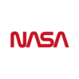

La NASA
connaissez-vous la Nasa ? C'est l'organisme qui a permis à notre astronaute de faire ses premiers pas sur la Lune !
La National Aeronautics and Space Administration (en français : « Administration nationale de l'aéronautique et de l'espace »), plus connue sous son acronyme NASA, est l'agence fédérale responsable de la majeure partie du programme spatial civil des États-Unis. La recherche aéronautique relève également du domaine de la NASA. Depuis sa création le 29 juillet 1958, la NASA joue mondialement un rôle dominant dans le domaine du vol spatial habité, de l'exploration du Système solaire et de la recherche spatiale.
Parmi les réalisations les plus marquantes de l'agence figurent les programmes spatiaux habités Apollo, la navette spatiale américaine, la Station spatiale internationale (en coopération avec plusieurs pays), les télescopes spatiaux comme Hubble et Kepler, l'exploration de Mars par les sondes spatiales Viking, Mars Exploration Rover et Curiosity, ainsi que celle de Jupiter, Saturne et Pluton par les sondes Pioneer, Voyager, Galileo, Cassini-Huygens et New Horizons.